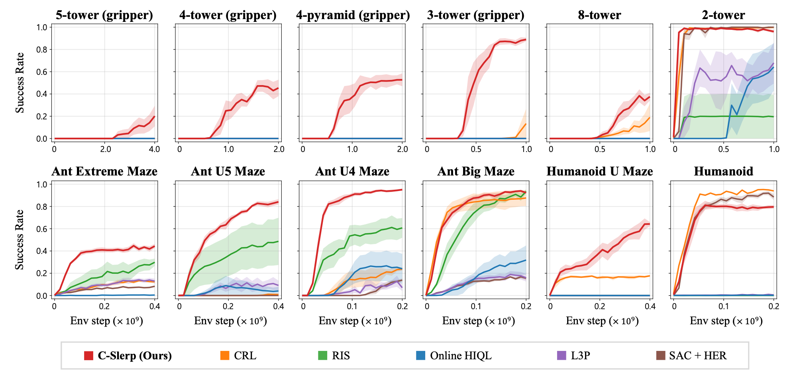
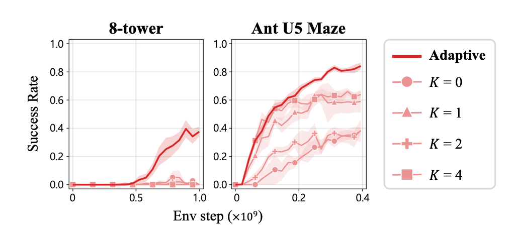
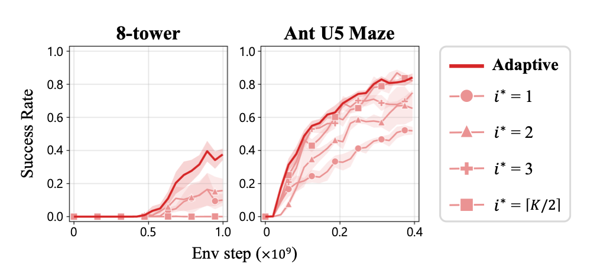
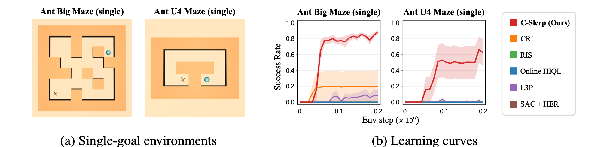

Hyperspherical Contrastive Representations
Unlock Planning and Exploration
* Equal contribution
Preprint
Abstract
We develop a self-supervised reinforcement learning algorithm that learns to build towers of up to eight cubes from scratch, without prior data, rewards, demonstrations, or pretrained models. Our method, Contrastive Planning via Spherical Linear Interpolation (C-Slerp), uses contrastive representations as reusable building blocks and repeatedly composes them to infer a sequence of intermediate waypoints. Under our hyperspherical parameterization, the learned representations allow intermediate waypoints to be inferred in closed form through spherical linear interpolation, without training a separate high-level policy or performing graph search. Importantly, the representation geometry also tells us how to adjust the number of waypoints based on the difficulty of each goal-reaching problem. Experiments show that our method succeeds on long-horizon navigation and robotic manipulation tasks, including settings where strong baselines fail to achieve a single success. Ablations further show that using a fixed number of waypoints substantially degrades performance, highlighting the importance of adapting the plan to task difficulty.
C-Slerp: Contrastive Planning via Spherical Linear Interpolation
Setup
- We collect data online with a hierarchical policy: every steps, a planner proposes a waypoint representation , and the policy pursues it for the next steps.
- We learn a state encoder a state-action encoder and a rotation matrix , all on the unit hypersphere, and score temporal relationships with
- where scores how states relate in time, trains the policy as in contrastive RL, and
- The rotation lets a single capture asymmetric dynamics, so it becomes a reusable building block that can be composed across any number of waypoints.
Objective
- We treat planning as inference: given a state and a goal we infer intermediate waypoints with consecutive waypoints separated by geometrically distributed time intervals.
- We approximate their posterior with a tractable distribution :
- where is the distribution over waypoints along trajectories of the data-collecting policy
Tractable reformulation
- The policy only needs a waypoint's representation so we infer representations instead of raw states.
- With the Bayes-optimal contrastive critic and uniformly distributed representations, the objective becomes
- Intuitively, it links the current state to the goal by aligning consecutive representations through , while the entropy term keeps the plan stochastic.
Closed-form solution
- Modeling each as a Gaussian normalized onto the sphere, a small-variance approximation gives the optimum in closed form:
- where and slerp is spherical linear interpolation.
- When the waypoints lie evenly along the geodesic from to In general, we interpolate toward the rotated goal and map each point back with
- The high-level planner has no additional network parameters and needs no graph search.
Geometric interpretation
- At planning time, given the current state and the goal the learned contrastive representations let us plan entirely on the hypersphere, from choosing how many waypoints to use to picking the one to pursue:
How good is C-Slerp?
- We evaluate on six manipulation tasks in BuilderBench and six locomotion tasks in JaxGCRL, without a goal curriculum or dense rewards.
- C-Slerp achieves the highest success rates on most tasks, and is the only method to succeed on every cube-stacking task with a gripper, where most baselines never achieve a single success.
- The gap widens as the horizon grows: more cubes, a gripper, or a larger maze.

Results
Is adaptive waypoint planning necessary?
- Fixing the number of waypoints or the waypoint the policy pursues substantially degrades performance, and adding more waypoints alone does not help.
- Too few waypoints make each subproblem too hard; too many slow progress with unnecessary stages. The plan should match the difficulty of the problem.


Exploration with a single goal
- With a single fixed goal at the most distant location of each maze, C-Slerp reaches it far more often than all baselines, and all baselines except CRL and L3P achieve zero success.
- C-Slerp facilitates directed exploration toward distant goals.
